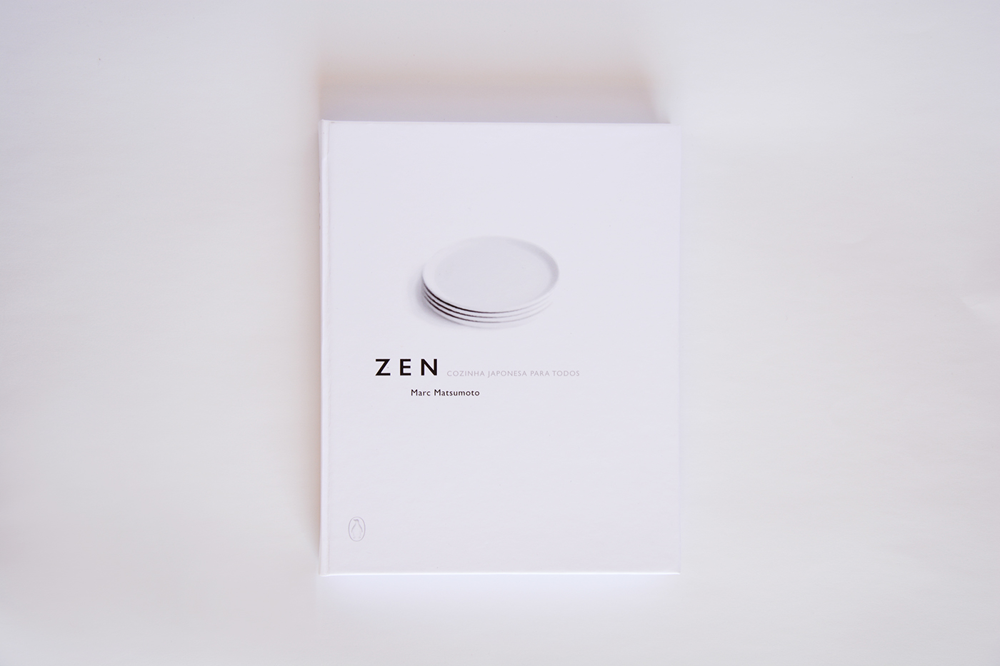
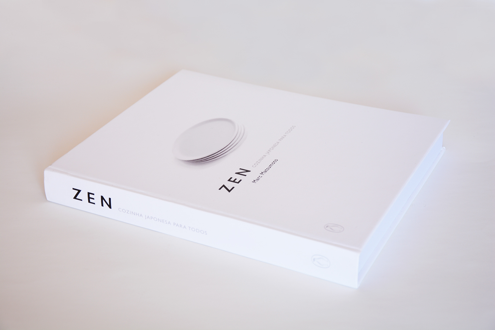
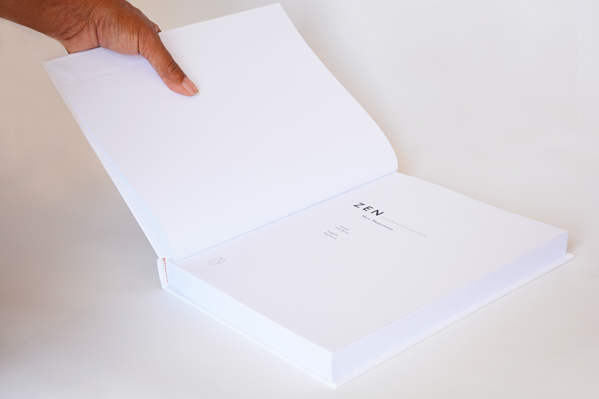
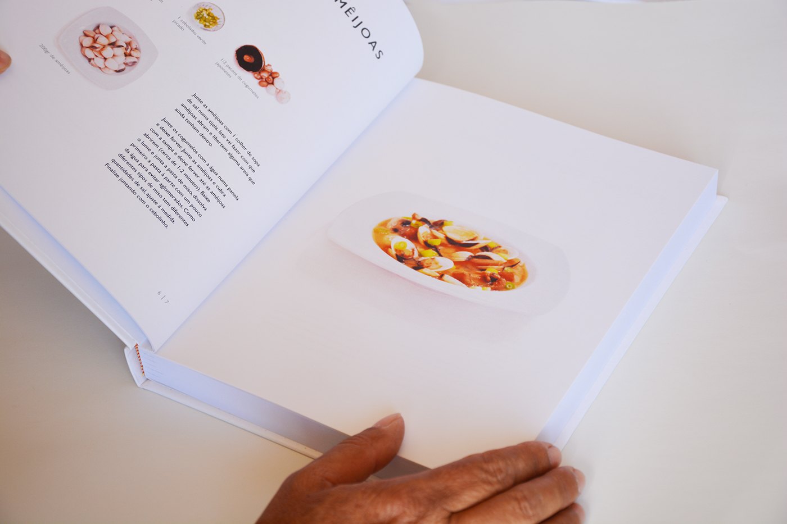
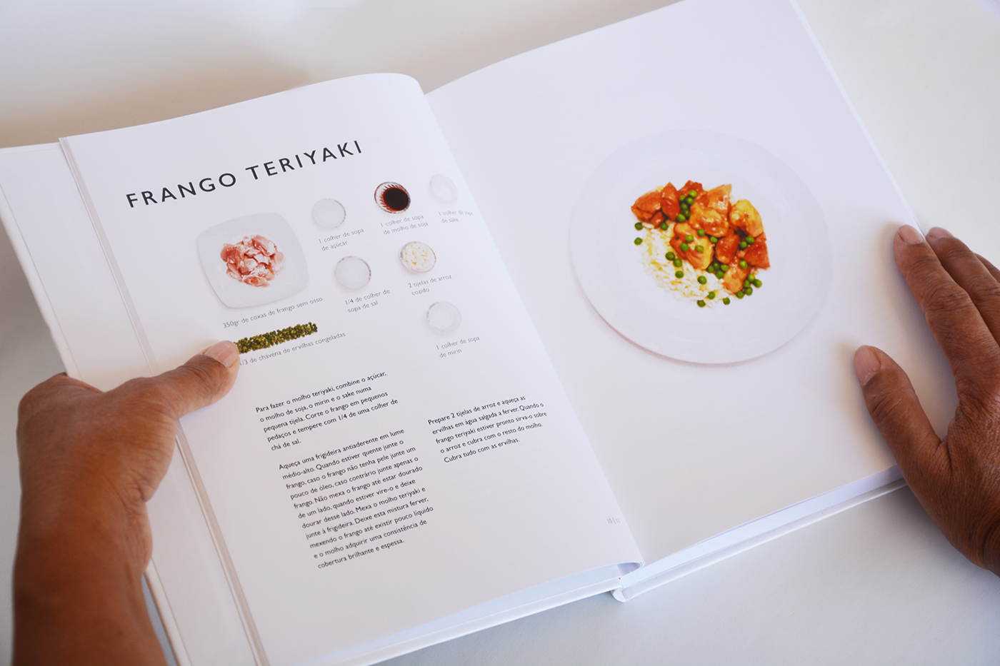

ZEN - JAPANESE CUISINE FOR EVERYONE
Third Year of University
Cover
Cover and spine
Cover page
Interior of the book - right page
Interior of the book
The starting point for this project was the Japanese zen style. Having as a guideline the importance of white space, the ideia of a clean look, and above all, minimalism, I created a layout that reflects just that. The style chosen was applied to a cookbook, and with that same style reflection in mind, I chose the Japanese cuisine and the title of the book "Zen - Japanese Cuisine for everyone." The layout is the most harmonious possible and with a very simple organization, always keeping present the importance of white space. All photographs of the book, ingredients and final product are my own.

© Faculdade de Belas Artes da Universidade do Porto | 2016 | Portefólio Tânia Ramos